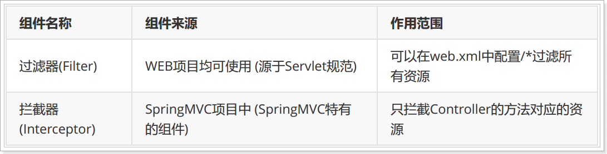

00、学习目标
1、掌握Controller的返回值使用
2、掌握Controller中的转发和重定向使用
3、掌握SpringMVC与json交互
4、掌握图片上传
5、掌握SpringMVC的统一异常处理
6、掌握PathVariable注解
01、搭建SpringMVC环境（一）创建项目、依赖、配置
1.1 步骤
- 创建项目、依赖
- 配置web.xml（核心控制器，字符过滤器）
- 配置springMVC.xml(视图解析器、开启包扫描、开启注解扫描)
- 编写index.html (静态资源)
- 测试
1.2 实现
1、创建项目、依赖
<?xml version="1.0" encoding="UTF-8"?>
<project xmlns="http://maven.apache.org/POM/4.0.0" xmlns:xsi="http://www.w3.org/2001/XMLSchema-instance" xsi:schemaLocation="http://maven.apache.org/POM/4.0.0 http://maven.apache.org/xsd/maven-4.0.0.xsd">
<modelVersion>4.0.0</modelVersion>
<groupId>com.itheima</groupId>
<artifactId>springmvcday02</artifactId>
<version>1.0-SNAPSHOT</version>
<packaging>war</packaging>
<dependencies>
<!--导入springmvc的依赖-->
<dependency>
<groupId>org.springframework</groupId>
<artifactId>spring-webmvc</artifactId>
<version>5.0.2.RELEASE</version>
</dependency>
<!--导入servlet的依赖-->
<dependency>
<groupId>javax.servlet</groupId>
<artifactId>javax.servlet-api</artifactId>
<version>3.1.0</version>
</dependency>
</dependencies>
</project>
2、配置web.xml
<?xml version="1.0" encoding="UTF-8"?>
<web-app xmlns:xsi="http://www.w3.org/2001/XMLSchema-instance"
xmlns="http://java.sun.com/xml/ns/javaee"
xsi:schemaLocation="http://java.sun.com/xml/ns/javaee http://java.sun.com/xml/ns/javaee/web-app_2_5.xsd"
version="2.5">
<servlet>
<servlet-name>dispatcherServlet</servlet-name>
<servlet-class>org.springframework.web.servlet.DispatcherServlet</servlet-class>
<!--加载springmvc的核心配置文件-->
<init-param>
<param-name>contextConfigLocation</param-name>
<param-value>classpath:springmvc.xml</param-value>
</init-param>
<!--服务启动的时候就创建核心控制器的Servlet-->
<load-on-startup>1</load-on-startup>
</servlet>
<servlet-mapping>
<servlet-name>dispatcherServlet</servlet-name>
<!--
/ 这种路径称作为缺省的路径，会拦截所有的请求，但是不包括jsp
/* 这种路径称作为缺省的路径，会拦截所有的请求，但是包括jsp
*-->
<url-pattern>/</url-pattern>
</servlet-mapping>
<!--字符过滤器-->
<filter>
<filter-name>characterEncodingFilter</filter-name>
<filter-class>org.springframework.web.filter.CharacterEncodingFilter</filter-class>
<!--指定过滤器使用的码表-->
<init-param>
<param-name>encoding</param-name>
<param-value>utf-8</param-value>
</init-param>
</filter>
<filter-mapping>
<filter-name>characterEncodingFilter</filter-name>
<url-pattern>/*</url-pattern>
</filter-mapping>
</web-app>3、配置springMVC.xml
<?xml version="1.0" encoding="UTF-8"?>
<beans xmlns="http://www.springframework.org/schema/beans"
xmlns:xsi="http://www.w3.org/2001/XMLSchema-instance"
xmlns:context="http://www.springframework.org/schema/context"
xmlns:mvc="http://www.springframework.org/schema/mvc"
xsi:schemaLocation="http://www.springframework.org/schema/beans
http://www.springframework.org/schema/beans/spring-beans.xsd http://www.springframework.org/schema/context http://www.springframework.org/schema/context/spring-context.xsd http://www.springframework.org/schema/cache http://www.springframework.org/schema/cache/spring-cache.xsd http://www.springframework.org/schema/mvc http://www.springframework.org/schema/mvc/spring-mvc.xsd">
<!--1.配置视图解析器-->
<bean class="org.springframework.web.servlet.view.InternalResourceViewResolver">
<!--配置前缀-->
<property name="prefix" value="/pages/"/>
<!--配置后缀-->
<property name="suffix" value=".jsp"/>
</bean>
<!--2. 进行包扫描-->
<context:component-scan base-package="com.itheima.controller"/>
<!--3. 开启注解驱动-->
<mvc:annotation-driven/>
</beans>4、编写index.html

5、测试
1.3 小结
当springmvc核心控制器配置映射路径如果是/ ,导致静态资源访问不了。
02、搭建SpringMVC环境（二）静态资源无法访问-方案1
2.1 问题
springMVC中拦截请求路径是“/”， 导致静态资源index.html访问不了。
2.2 分析
为什么导致这种情况的发生呢？
tomcat服务器是运行java程序的服务器，理论上说根本没法运行html这些静态资源代码的。tomcat为了解决静态资源的访问问题，所以设计了一个类DefaultServlet去读取静态资源，然后输出。而这种DefaultServlet配置的映射路径就是/。
1、查看tomcat/conf/web.xml
==DefaultServlet的作用就是读取静态资源向浏览器输出的。 如果该servlet失效，那么就会导致静态资源无法访问==
2、自己项目配置的DispatcherServlet拦截的路径也是/, 会覆盖DefaultServlet。
3、DefaultServlet的作用： tomcat提供的默认sevlet，专门用于处理静态资源。
2.3 解决
让指定的静态资源找default名称对应的servlet即可：
截图对应的完整代码：
<?xml version="1.0" encoding="UTF-8"?>
<web-app xmlns:xsi="http://www.w3.org/2001/XMLSchema-instance"
xmlns="http://java.sun.com/xml/ns/javaee"
xsi:schemaLocation="http://java.sun.com/xml/ns/javaee http://java.sun.com/xml/ns/javaee/web-app_2_5.xsd"
version="2.5">
<servlet>
<servlet-name>dispatcherServlet</servlet-name>
<servlet-class>org.springframework.web.servlet.DispatcherServlet</servlet-class>
<!--加载springmvc的核心配置文件-->
<init-param>
<param-name>contextConfigLocation</param-name>
<param-value>classpath:springmvc.xml</param-value>
</init-param>
<!--服务启动的时候就创建核心控制器的Servlet-->
<load-on-startup>1</load-on-startup>
</servlet>
<servlet-mapping>
<servlet-name>dispatcherServlet</servlet-name>
<!--
/ 这种路径称作为缺省的路径，会拦截所有的请求，但是不包括jsp
/* 这种路径称作为缺省的路径，会拦截所有的请求，但是包括jsp
*-->
<url-pattern>/</url-pattern>
</servlet-mapping>
<!--字符过滤器-->
<filter>
<filter-name>characterEncodingFilter</filter-name>
<filter-class>org.springframework.web.filter.CharacterEncodingFilter</filter-class>
<!--指定过滤器使用的码表-->
<init-param>
<param-name>encoding</param-name>
<param-value>utf-8</param-value>
</init-param>
</filter>
<filter-mapping>
<filter-name>characterEncodingFilter</filter-name>
<url-pattern>/*</url-pattern>
</filter-mapping>
<!--静态资源没法访问的解决方案一；重新给DefaultServlet配置映射路径-->
<servlet-mapping>
<servlet-name>default</servlet-name>
<url-pattern>*.html</url-pattern>
<url-pattern>*.css</url-pattern>
<url-pattern>*.js</url-pattern>
<url-pattern>*.jpg</url-pattern>
<url-pattern>*.png</url-pattern>
</servlet-mapping>
</web-app>==缺点： 由于该问题是配置springmvc环境的时候导致的，所以springmvc理论上就要提供解决方案。 而不应该要求我们去修改tomcat的配置。==
03、搭建SpringMVC环境（二）静态资源无法访问-方案2
3.1 目标
SpringMVC也提供了解决方案用来解决上述静态资源访问不了的问题。查看下面2种解决方案。
3.2 方案
解决1：了解，项目中不使用。因为比较麻烦。
<!--静态资源没法访问的解决方案2(了解即可)： 使用mvc:resources标签去解决
mapping: 访问的路径
locatoin：查找目录
-->
<mvc:resources mapping="/index.html" location="/"/>
<mvc:resources mapping="/css/*" location="/css"/>
<mvc:resources mapping="/js/*" location="/js"/>
<mvc:resources mapping="/pages/*" location="/pages"/>解决2：推荐
完整配置：
<?xml version="1.0" encoding="UTF-8"?>
<beans xmlns="http://www.springframework.org/schema/beans"
xmlns:xsi="http://www.w3.org/2001/XMLSchema-instance"
xmlns:context="http://www.springframework.org/schema/context"
xmlns:mvc="http://www.springframework.org/schema/mvc"
xsi:schemaLocation="http://www.springframework.org/schema/beans
http://www.springframework.org/schema/beans/spring-beans.xsd http://www.springframework.org/schema/context http://www.springframework.org/schema/context/spring-context.xsd http://www.springframework.org/schema/cache http://www.springframework.org/schema/cache/spring-cache.xsd http://www.springframework.org/schema/mvc http://www.springframework.org/schema/mvc/spring-mvc.xsd">
<!--1.配置视图解析器-->
<bean class="org.springframework.web.servlet.view.InternalResourceViewResolver">
<!--配置前缀-->
<property name="prefix" value="/pages/"/>
<!--配置后缀-->
<property name="suffix" value=".jsp"/>
</bean>
<!--2. 进行包扫描-->
<context:component-scan base-package="com.itheima.controller"/>
<!--3. 开启注解驱动-->
<mvc:annotation-driven/>
<!--静态资源没法访问的解决方案2(了解即可)： 使用mvc:resources标签去解决
mapping: 访问的路径
locatoin：查找目录
<mvc:resources mapping="/index.html" location="/"/>
<mvc:resources mapping="/css/*" location="/css"/>
<mvc:resources mapping="/js/*" location="/js"/>
<mvc:resources mapping="/pages/*" location="/pages"/>
-->
<!--静态资源没法访问的解决方案3：完美方案
<mvc:default-servlet-handler/> 这个标签就是通知springmvc把静态资源的处理权交给DefaultServlet
-->
<mvc:default-servlet-handler/>
</beans>3.3 小结
当springmvc拦截请求路径为/, 导致静态资源访问不了，如何解决，有几种方案？
- 方案一： 在web.xml文件重新为DefaultServlet 配置映射路径,不推荐
- 方案二：在springmvc.xml文件上使用mvc:resources/标签
- 方案三：在springmvc.xml文件mvc:default-servlet-handler/
04、SpringMVC控制器方法参数：Model与ModelMap
4.1 目标
- 使用Model或者ModelMap作为控制器方法参数
- 作用：可以往request域中存储数据。 request.setAttribute(key, value);
4.2 步骤
1.编写ModelController存入数据到request\Model\ModelMap
2.编写success.jsp获取request域中数据
3.测试
4.3 实现
1.编写ModelController存入数据到request\Model\ModelMap
package com.itheima.controller;
import org.springframework.stereotype.Controller;
import org.springframework.ui.Model;
import org.springframework.ui.ModelMap;
import org.springframework.web.bind.annotation.RequestMapping;
import javax.servlet.http.HttpServletRequest;
@Controller
public class ModelController {
//往request域中存储数据
@RequestMapping("/request")
public String request(HttpServletRequest request){
request.setAttribute("request_data","猪小明");
return "success";
}
//往request域中存储数据
//往Model中存储数据，其实本质上也是往request域中存储数据
@RequestMapping("/model")
public String model(Model model){
model.addAttribute("model_data","妹大爷");
return "success";
}
//往request域中存储数据
//往ModelMap中存储数据，其实本质上也是往request域中存储数据
@RequestMapping("/modelMap")
public String modelMap(ModelMap modelMap){
modelMap.addAttribute("modelMap_data","茅台");
return "success";
}
}
2.编写success.jsp获取request数据
<%@ page contentType="text/html;charset=UTF-8" language="java" %>
<html>
<head>
<title>Title</title>
</head>
<body>
request域中的数据：${requestScope.request_data}<br/>
Model域中的数据：${requestScope.model_data}<br/>
ModelMap域中的数据：${requestScope.modelMap_data}<br/>
</body>
</html>
3.测试

4.4 小结
往request、model、modelMap中存储数据其实本质上都是域存储数据？
request域中存储数据
05、控制器方法返回值【重点中重点】
5.1 说明
SpringMVC控制器方法返回值？
- 返回String字符串
- 返回页面名称字符串
- 返回转发字符串
- 返回重定向字符串
- 返回void
- 返回ModelAndView对象
- 返回任意对象。（配置@ResponseBody注解）
5.2 演示
导入糊涂工具类
<!--hutool工具--> <dependency> <groupId>cn.hutool</groupId> <artifactId>hutool-all</artifactId> <version>5.2.3</version> </dependency>编写控制器
package com.itheima.controller;
import cn.hutool.core.io.IoUtil;
import org.springframework.stereotype.Controller;
import org.springframework.web.bind.annotation.RequestMapping;
import org.springframework.web.servlet.ModelAndView;
import javax.servlet.ServletContext;
import javax.servlet.ServletOutputStream;
import javax.servlet.http.HttpServletRequest;
import javax.servlet.http.HttpServletResponse;
import java.io.IOException;
import java.io.InputStream;
/*
该案例的目标：讲解方法的返回值类型.
方法的返回值类型：
1. 字符串
a. 普通字符串（返回的视图名称是会经过视图解析器的， ）
b. 带redirect开头的字符串(请求重定向)， 格式：redirect:路径 这种方式是不会经过视图解析器。
c. 带forward开头的字符串（请求转发）， 格式：forward:路径 这种方式实现请求转发，也是不会经过视图解析器的。
2. void , 一般是下载或者输出图片在页面上的时候使用这种方式。
3. ModelAndView ModelAndView这个对象是既可以往Request对象存储数据，也可以设置视图的名称
4. java对象（转换为json对象）
*/
@Controller
public class ReturnController {
// a. 普通字符串（返回的视图名称是会经过视图解析器的， ）
@RequestMapping("str")
public String str(){
return "success"; // 前缀名：/pages/ 后缀名：.jsp 得到完整路径： /pages/success.jsp
}
// b. 带redirect开头的字符串， 格式：redirect:路径 这种方式是不会经过视图解析器。
// 实现请求重定向进行页面的跳转
@RequestMapping("redirect")
public String redirect(){
return "redirect:/index.html"; //
}
// c. 带forward开头的字符串（请求转发）， 格式：forward:路径 这种方式实现请求转发，也是不会经过视图解析器的。
@RequestMapping("forward")
public String forward(){
return "forward:/index.html"; //请求转发
}
//方法的目标输出一张图片
/*
查找资源的方式：
1. 如果查找的src（resources）下面的资源，我们使用类路径查找
2. 如果我们查找的是webapp下面的资源，我们使用ServletContext对象去查找
*/
@RequestMapping("/image")
public void image(HttpServletRequest request, HttpServletResponse response) throws IOException {
//1.得到ServletContext，
ServletContext servletContext = request.getServletContext();
//2. 得到图片的输入流
InputStream inputStream = servletContext.getResourceAsStream("/img/1.png");//这里的/代表了webapp
//3. 得到浏览器的输出流
ServletOutputStream outputStream = response.getOutputStream();
//4. 使用糊涂工具类输出图片
IoUtil.copy(inputStream,outputStream);
//5. 关闭资源
/*
什么时候需要关闭资源：占用有限的资源，并且不会自动关闭。
*/
inputStream.close();
}
//3. ModelAndView ModelAndView这个对象是既可以往Request对象存储数据，也可以设置视图的名称
@RequestMapping("/mv")
public ModelAndView mv() throws IOException {
//1. 创建一个ModelAndView
ModelAndView mv = new ModelAndView();
//2. 往域中存储的数据(往request域中存储数据)
mv.addObject("message","呵呵");
//3. 设置视图的名称
mv.setViewName("success"); //视图规则与字符串返回值规则一样，也就是说可以带上redirect、forward这些字符串的。
return mv;
}
}
5.3 小结
控制器方法返回值有哪些？
- 字符串
- 普通字符串
- redirect:/
- forward开头字符串
- void
- MOdelAndView
06、交互JSON数据：@RequestBody与@ResponseBody[重点]
6.1 介绍
@RequestBody
作用：在处理器方法形参上使用，把请求的json格式的字符串数据，转换成java对象。
json字符串——>java对象
@ResponseBody
作用：在处理器方法返回值上使用，或者方法上使用。把响应的java对象，转换成json格式数据。
方法返回的对象—–>json
注意
- @RequestBody、@ResponseBody实现对象与json之间的互换
- 如果要用这两个注解，必须要先引入jackson支持包
6.2 步骤
- 添加jackson支持包
- 引入jQuery类库, 编写ajaxRequest.html, 发送ajax异步请求
- 编写实体类，编写JsonController，使用@RequestBody、@ResponseBody
- 测试
6.3 实现
添加jackson支持包
<!--添加jackson支持包--> <dependency> <groupId>com.fasterxml.jackson.core</groupId> <artifactId>jackson-core</artifactId> <version>2.9.0</version> </dependency> <dependency> <groupId>com.fasterxml.jackson.core</groupId> <artifactId>jackson-databind</artifactId> <version>2.9.0</version> </dependency> <dependency> <groupId>com.fasterxml.jackson.core</groupId> <artifactId>jackson-annotations</artifactId> <version>2.9.0</version> </dependency>引入jQuery类库, 编写ajaxRequest.html, 发送ajax异步请求
<!DOCTYPE html> <html lang="en"> <head> <meta charset="UTF-8"> <title>Title</title> <script src="js/jquery-3.3.1.min.js"></script> </head> <body> <input type="button" id="b1" value="按钮"/> </body> <script> //按钮点击之后发送异步的请求 $("#b1").click(function(){ $.ajax({ url:"/jsonData", //发送的地址 type:"post",//请求的方式，注意：如果发送的json的字符串，必须使用post请求方式 data:'{"id":110,"name":"狗娃"}',//注意： 发送的是json格式的字符串 dataType:"json", contentType:"application/json;charset=utf-8",//注意： 如果前端发送的是json格式数据，一定要要通知服务器目前发送的是json格式的数据 success:function(user){ alert("用户id："+user.id+" 用户名："+ user.name); } }); }); </script> </html>编写实体类，编写JsonController，使用@RequestBody、@ResponseBody
图1: 编写User对象
package com.itheima.model; public class User { private Integer id; private String name; public User() { } public User(Integer id, String name) { this.id = id; this.name = name; } /** * 获取 * @return id */ public Integer getId() { return id; } /** * 设置 * @param id */ public void setId(Integer id) { this.id = id; } /** * 获取 * @return name */ public String getName() { return name; } /** * 设置 * @param name */ public void setName(String name) { this.name = name; } public String toString() { return "User{id = " + id + ", name = " + name + "}"; } }编写控制器
package com.itheima.controller; import com.itheima.model.User; import org.springframework.stereotype.Controller; import org.springframework.web.bind.annotation.RequestBody; import org.springframework.web.bind.annotation.RequestMapping; import org.springframework.web.bind.annotation.ResponseBody; /* @RequestBody：将请求参数的json字符串转换为java对象赋予给形参 @responsebody:将返回值对象转换为json对象 */ @Controller public class JsonController { @RequestMapping("/jsonData") //需要将返回值的java对象转换为json对象 @ResponseBody //将返回值的java对象转换为json对象 public User jsonData(@RequestBody User user){ //请求参数是json需要转换为java对象，这时候需要使用@RequestBody System.out.println("接收到的对象："+ user); User resultUser = new User(220,"狗剩"); return resultUser; } }测试
6.4 小结
@RequestBody与@ResponseBody注解作用是什么？ 使用前提是什么？
@RequestBody注解的作用： 把json字符串转换为java对象，用于形式参数
@ResponseBody注解作用： 将方法的返回值对象转换为json， 用于返回值
发送的数据是json使用前提： 使用post的请求方式
07、Restful 风格的 URL（1）简介[重点]
7.1 介绍
REST全称是Representational State Transfer，中文意思是表现层状态转移。 它首次出现在2000年Roy Fielding的博士论文中，Roy Fielding是HTTP规范的主要编写者之一。 他在论文中提到：”我这篇文章的写作目的，就是想在符合架构原理的前提下，理解和评估以网络为基础的应用软件的架构设计，得到一个功能强、性能好、适宜通信的架构。REST指的是一组架构约束条件和原则。” 如果一个架构符合REST的约束条件和原则，我们就称它为RESTful架构。
REST本身并没有创造新的技术、组件或服务，而隐藏在RESTful背后的理念就是使用Web的现有特征和能力， 更好地使用现有Web标准中的一些准则和约束。虽然REST本身受Web技术的影响很深， 但是理论上REST架构风格并不是绑定在HTTP上，只不过目前HTTP是唯一与REST相关的实例。 所以我们这里描述的REST也是通过HTTP实现的REST。
简单来说，
restful就是一个url地址。==是一种url地址的编写风格==。
restful风格的url地址的特点：更简洁、更易于实现缓存、更有层次感。
7.2 需求
需求：如何实现一个url地址，对应后台多个方法？
传统的方式？
http://localhost:8080/user 如何实现一个地址对应后台的多个方法？
http://localhost:8080/user?method=get 查询
http://localhost:8080/user?method=save 添加
http://localhost:8080/user?method=update 修改
http://localhost:8080/user?method=delete 删除
基于restful风格的url实现？同一个url地址实现用户不同的请求，通过用户的请求方式去区分用户的行为
http://localhost:8080/user 查询
发送:GET
http://localhost:8080/user 添加
发送：POST
http://localhost:8080/user 修改
发送：PUT
http://localhost:8080/user 删除
发送：DELETE
7.3 小结
restful的作用是什么？
restful作用： 简化url地址的编写，让url地址更加简洁与更加有层次感.
核心思想： 同一个url地址，通过不同的请求方式区分用户不同的行为。
- 查询 get
- 添加 post
- 更新 put
- 删除 delete08、Restful 风格的 URL（2）基于HiddenHttpMethodFilter
8.1 引入
==表单只是支持了get与post两种请求方式，但是restful的风格需要使用delete与put的请求方式，那么springmvc就提供了HiddenHttpMethodFilter的过滤器，使用该过滤器可以模拟出delete与put两种请求方式。==
- 总结两点问题：
- 使用HiddenHttpMethodFilter过滤请求，主要是为了让页面支持put、delete请求
- put、delete请求， 只支持返回json类型的数据
8.2 演示
第一步：配置HiddenHttpMethodFilter 过滤器，让页面支持put、delete请求。
<?xml version="1.0" encoding="UTF-8"?>
<web-app xmlns:xsi="http://www.w3.org/2001/XMLSchema-instance"
xmlns="http://java.sun.com/xml/ns/javaee"
xsi:schemaLocation="http://java.sun.com/xml/ns/javaee http://java.sun.com/xml/ns/javaee/web-app_2_5.xsd"
version="2.5">
<!--如果需要使用restful的风格，由于表单不支持put与delete的请求方式，
所以需要配置一个HiddenHttpMethodFilter过滤器模拟这两种的请求.
注意：
1.如果你需要模拟出put与delete的请求方式，那么表单的真实的请求方式必须是post
2.表单的参数必须有一个名字为_method,然后该参数再指定是put或者是delete的请求方式.
-->
<filter>
<filter-name>hiddenHttpMethodFilter</filter-name>
<filter-class>org.springframework.web.filter.HiddenHttpMethodFilter</filter-class>
</filter>
<filter-mapping>
<filter-name>hiddenHttpMethodFilter</filter-name>
<url-pattern>/*</url-pattern>
</filter-mapping>
</web-app>第二步：编写restful.html页面，发送restful风格的url请求。
<input type="hidden" name="_method" value="get"> 这里隐藏域的值，表示具体的请求方式。
<!DOCTYPE html>
<html lang="en">
<head>
<meta charset="UTF-8">
<title>Title</title>
</head>
<body>
<h1>======get请求方式==========</h1>
<form action="/user" method="get">
<input type="submit" value="get请求方式查询"/>
</form>
<h1>======post请求方式==========</h1>
<form action="/user" method="post">
<input type="submit" value="post请求方式添加用户"/>
</form>
<h1>======put请求方式==========</h1>
<form action="/user" method="post">
<input type="hidden" name="_method" value="put">
<input type="submit" value="put请求方式修改"/>
</form>
<h1>======delete请求方式==========</h1>
<form action="/user" method="post">
<input type="hidden" name="_method" value="delete">
<input type="submit" value="delete请求方式删除"/>
</form>
</body>
</html>第三步：编写UserController, 处理同一个地址的不同提交方式的请求
@PathVariable 用于获取restful请求中占位符参数值，赋值给方法的参数。
package com.itheima.controller;
import org.springframework.stereotype.Controller;
import org.springframework.web.bind.annotation.PathVariable;
import org.springframework.web.bind.annotation.RequestMapping;
import org.springframework.web.bind.annotation.RequestMethod;
import org.springframework.web.bind.annotation.ResponseBody;
@Controller
@RequestMapping("/user")
public class UserController {
@RequestMapping(method = RequestMethod.GET) //限定该方法的请求方式必须是get
public String findAllUser(){
System.out.println("查询全部用户....");
return "success";
}
/*
restful传参的风格:
url地址/参数值1/参数值2
{id}:参数的占位符
@PathVariable("id") : 获取url地址的请求参数,然后赋予给形参
*/
@RequestMapping(value="/{id}/{name}" ,method = RequestMethod.GET) //限定该方法的请求方式必须是get
public String findById(@PathVariable("id") Integer id,@PathVariable("name") String name){
System.out.println("id值："+ id +" name值："+ name);
return "success";
}
@RequestMapping(method = RequestMethod.POST) //限定该方法的请求方式必须是post
public String addUser(){
System.out.println("添加用户....");
return "success";
}
@RequestMapping(method = RequestMethod.PUT) //限定该方法的请求方式必须是put
public String updateUser(){
System.out.println("更新用户....");
return "success";
}
@RequestMapping(method = RequestMethod.DELETE) //限定该方法的请求方式必须是delete
public String deleteUser(){
System.out.println("删除用户....");
return "success";
}
}
第四步：测试
测试时候发现PUT和DELETE方法，报错405页面错误
原因：JSP页面不支持PUT和DELETE请求的转发
Restful传递参数的过程：
8.4 小结
1、@PathVariable 作用是什么？
- 获取路径上的参数
2、页面如何支持put、delete请求？
在web.xml文件上配置HiddenHttpMethodFilter过滤器
表单真实的请求方式post，然后表单必须有一个参数_method=delete|put
09、SpringMVC 实现文件上传
9.1 原理
springMVC文件上传，就是用到了Apache的文件上传组件实现。简化了过程。
9.2 实现
添加依赖
<!--文件上传依赖--> <dependency> <groupId>commons-fileupload</groupId> <artifactId>commons-fileupload</artifactId> <version>1.4</version> </dependency>编写fileuploadTest.html
<!DOCTYPE html>
<html lang="en">
<head>
<meta charset="UTF-8">
<title>Title</title>
</head>
<body>
<!-- 文件上传对表单的要求：
1. 请求方式必须是post
2.enctype="multipart/form-data" 通知浏览器对表单的数据不要进行url编码-->
<form action="/uploadFile" method="post" enctype="multipart/form-data">
用户名：<input type="text" name="userName"/><br/>
大头照：<input type="file" name="fileImage"/><br/>
<input type="submit" value="提交"/>
</form>
</body>
</html>编写UploadController.java
package com.itheima.controller; import cn.hutool.core.util.IdUtil; import org.apache.commons.io.IOUtils; import org.springframework.stereotype.Controller; import org.springframework.web.bind.annotation.RequestMapping; import org.springframework.web.multipart.MultipartFile; import javax.servlet.http.HttpServletRequest; import java.io.File; import java.io.FileNotFoundException; import java.io.FileOutputStream; import java.io.IOException; @Controller public class UploadFileController { /* 文件上传的数据类型必须使用： */ @RequestMapping("/uploadFile") public String uploadFile(HttpServletRequest request,String userName, MultipartFile fileImage) throws IOException { //1. 找到upload的文件夹的真实路径 String dir = request.getServletContext().getRealPath("/upload"); File dirFile = new File(dir); //2. 判断upload文件夹是否存在，如果不存在的创建 if(!dirFile.exists()){ dirFile.mkdir(); } //3. 获取上传文件的文件名 1.jpg String fileName = fileImage.getOriginalFilename() ;//getOriginalFilename() 获取上传文件的文件名的 //4. 截图文件名的后缀名 .jpg String extName = fileName.substring(fileName.lastIndexOf("."),fileName.length()); //5.生成一个uuid作为文件名 String newFileName = IdUtil.simpleUUID()+extName; //6. 使用upload路径+文件名形参一个新路径 D:/image/1.jpg File targetFile = new File(dirFile,newFileName); FileOutputStream fileOutputStream = new FileOutputStream(targetFile); //7. 把文件写入 IOUtils.copy(fileImage.getInputStream(),fileOutputStream); //8.关闭资源 fileOutputStream.close(); return "success"; } }配置springMVC.xml，配置文件上传解析器
<?xml version="1.0" encoding="UTF-8"?> <beans xmlns="http://www.springframework.org/schema/beans" xmlns:xsi="http://www.w3.org/2001/XMLSchema-instance" xmlns:context="http://www.springframework.org/schema/context" xmlns:mvc="http://www.springframework.org/schema/mvc" xsi:schemaLocation="http://www.springframework.org/schema/beans http://www.springframework.org/schema/beans/spring-beans.xsd http://www.springframework.org/schema/context http://www.springframework.org/schema/context/spring-context.xsd http://www.springframework.org/schema/mvc http://www.springframework.org/schema/mvc/spring-mvc.xsd"> <!--配置文件上传解析器 巨坑： 文件解析器的id值必须是固定的：multipartResolver --> <bean id="multipartResolver" class="org.springframework.web.multipart.commons.CommonsMultipartResolver"> <!--指定用户上传文件大小最大是10m--> <property name="maxUploadSize" value="#{1024*1024*10}"/> <!--单位是字节 , 我自定义的目标：10m--> </bean> </beans>9.3 小结
1、如何实现文件上传？
- 导入依赖 commons-fileupload
- 表单： method=post enctype=multipart/form-data
- 控制器： 文件表单项使用的MultipartFile
- 在springmvc.xml文件上配置CommonsMultipartResolver文件解析器对象2、易错点1：
3、易错点2：
3.要到target目录下查看文件是否存在
10、SpringMVC异常处理（一）异常处理思路【理解】
10.1 目标
掌握项目中异常常用的处理方案。
10.2 Java异常分类
|–Throwable
|– Error
|– Exception 检查异常(编译异常)
|–RuntimeException 运行时期异常
检查异常： 会给调用者带来麻烦。调用者必须处理异常，不处理异常程序无法继续。
运行时期异常：调用者可以处理异常，也可以不处理异常。更灵活。
10.3 项目中如何处理异常？
在三层架构中, 如果Dao持久层有异常可以抛出到调用方(Service), Service有异常可以抛出到
Controller, 但是Controller有异常, 不建议抛出到客户端(用户), 因为用户看不懂异常, 无法进行处
理会导致用户体验非常差。
异常处理的原则：出现异常要给用户友好提示，自动跳转到友好提示页面。
代码层面：
dao 抛异常
service 抛异常
web 处理异常
能够控制器每个方法都写try..catch.. 太麻烦！
异常处理方案
2.1 表现层，处理异常，写try.catch 不推荐
2.2 ==自定义异常过滤器器 (处理所有的异常)==
举例如下：
@WebFilter("/*") public class ExceptionFilter implements Filter { public void doFilter(ServletRequest request, ServletResponse response, FilterChain chain){ try{ chain.doFilter(request, response); }catch(Exception e){ // 异常处理 } } } 3 使用框架自带的异常处理机制。更加简单。
10.4 小结
异常处理有哪些实现方案？
- 传统的方案， dao抛出、service抛出、controller捕获处理
- 编写一个过滤器去集中处理
- 使用springmvc自带的异常处理机制，自定义异常处理器。
11、SpringMVC异常处理（二）异常处理实现【掌握】
11.1 目标
实现springmvc异常处理。
11.2 步骤
- 编写OrderController，然后编写save方法，在save方法出现异常
- 自定义异常处理器
- 编写错误页面
11.2 模拟异常
- 编写OrderController，然后编写save方法，在save方法出现异常
package com.itheima.controller;
import org.springframework.stereotype.Controller;
import org.springframework.web.bind.annotation.RequestMapping;
@Controller
public class OrderController {
@RequestMapping("/save")
public String save(){
System.out.println("调用了save方法...");
int i = 1/0;
return "success";
}
}
- 自定义异常处理器
package com.itheima.utils;
import org.springframework.stereotype.Component;
import org.springframework.web.servlet.HandlerExceptionResolver;
import org.springframework.web.servlet.ModelAndView;
import org.springframework.web.servlet.mvc.method.annotation.ExceptionHandlerExceptionResolver;
import javax.servlet.http.HttpServletRequest;
import javax.servlet.http.HttpServletResponse;
/*
目标： 自定义异常处理器
自定义异常处理器的步骤：
1. 自定义一个类实现HandlerExceptionResolver接口,
2. 实现接口的方法
3. 创建异常处理器的对象，并且交给spring的容器
*/
@Component
public class CustomerExceptionHandler implements HandlerExceptionResolver {
@Override
public ModelAndView resolveException(HttpServletRequest httpServletRequest,
HttpServletResponse httpServletResponse,
Object o, Exception e) {
ModelAndView modelAndView = new ModelAndView();
//把异常的信息存储到request域中
modelAndView.addObject("errorMsg",e.getMessage());
//设置视图的名称
modelAndView.setViewName("error");
return modelAndView;
}
}
==注意： 如果同学们使用@Component注解创建该类的对象，记住要修改包扫描的范围==
- 编写错误页面
<%@ page contentType="text/html;charset=UTF-8" language="java" %>
<html>
<head>
<title>Title</title>
</head>
<body>
异常的信息：<span style="color:red;">${errorMsg}</span>
</body>
</html>
11.3 测试

控制器方法出现异常，自动去到异常处理类，跳转到错误页面！！！
11.5 小结
如何自定义SpringMVC异常处理器？
1. 自定义一个类实现HandlerExceptionResover接口
2. 实现接口中方法
3. 创建异常处理器对象，并且交给spring的容器 12、SpringMVC拦截器（一）拦截器作用
12.1 目标
清楚拦截器与过滤器的区别。
12.2 过滤器作用
拦截请求
可以拦截所有的请求（/*）：jsp、html、css、js、img、servlet、controller
作用
处理请求之前做一些初始化操作
请求处理完成后，也可以做一些其他操作。如：释放资源。
是servlet的技术，应用范围比较广
12.3 拦截器
什么是拦截器
springmvc框架中的拦截器，相当于web阶段学习的过滤器（filter），可以实现前置增强和后
置增强功能。在springmvc框架中，拦截器可以对处理器方法执行预处理（前置增强），和执行
后处理（后置增强）, ==拦截器只能拦截controller的请求==
拦截器的作用
- Spring MVC 的处理器拦截器类似于Servlet 开发中的过滤器Filter
- 用于对处理器进行预处理 和 后处理。
- 用户可以自己定义一些拦截器来实现特定的功能
拦截器与过滤器区别
springmvc的拦截器是属于springmvc的技术，只能在使用springmvc的技术上，才可以使用其拦截器
拦截的请求： 主要是拦截springmvc的请求
他们的作用基本上是一样的

12.4 小结
过滤器与拦截器，都可以拦截请求。
过滤器可以拦截所有请求，拦截器主要拦截控制器的请求。
过滤器应用范围更广。只要是javaweb项目，无论使用什么前端控制框架都可以应用filter。
13、SpringMVC拦截器（二）自定义拦截器【了解】
13.1 目标
会使用自定义拦截器，分析执行流程
13.2 使用步骤
- 目标DeptController控制器
- 写一个普通java类，实现接口HandlerInterceptor
- springMVC中，配置拦截器
13.3 代码演示
1、目标DeptController控制器
package com.itheima.controller;
import org.springframework.stereotype.Controller;
import org.springframework.web.bind.annotation.RequestMapping;
@Controller
@RequestMapping("/dept")
public class DeptController {
@RequestMapping("/save")
public String save(){
System.out.println("目标方法");
return "success";
}
}
2、写一个普通java类，实现接口HandlerInterceptor
package com.itheima.utils;
import org.springframework.web.servlet.HandlerInterceptor;
import org.springframework.web.servlet.ModelAndView;
import javax.servlet.http.HttpServletRequest;
import javax.servlet.http.HttpServletResponse;
/*
自定义拦截器的步骤：
1. 自定义一个类实现HandlerInterceptor
2. 实现接口方法
3. 在springmvc的配置文件上配置拦截器
*/
public class Demo1Interceptor implements HandlerInterceptor {
/*
preHandle： 调用目标方法之前调用，该方法的返回值代表是否放行目标资源。如果返回的是true，代表放行，可以访问目标资源
如果返回false，则代表不放行。
*/
@Override
public boolean preHandle(HttpServletRequest request, HttpServletResponse response, Object handler) throws Exception {
System.out.println("Demo1Interceptor的preHandle方法调用");
return true;
}
/*
try{
前置通知
目标方法
后置通知
}finally{
}
postHandle:目标方法执行完毕之后调用的方法，如果目标方法出现了异常，该方法不会调用。类似于后置通知
*/
@Override
public void postHandle(HttpServletRequest request, HttpServletResponse response, Object handler, ModelAndView modelAndView) throws Exception {
System.out.println("Demo1Interceptor的postHandle方法被调用了..");
}
/*
afterCompletion： 类似于最终通知,执行的前提preHandler方法必须放行，一旦preHandler方法放行，不管目标方法是否出现异常
都会执行的方法。
*/
@Override
public void afterCompletion(HttpServletRequest request, HttpServletResponse response, Object handler, Exception ex) throws Exception {
System.out.println("Demo1Interceptor的afterCompletion方法被调用了..");
}
}
2、springMVC中，配置拦截器
<?xml version="1.0" encoding="UTF-8"?>
<beans xmlns="http://www.springframework.org/schema/beans"
xmlns:xsi="http://www.w3.org/2001/XMLSchema-instance"
xmlns:context="http://www.springframework.org/schema/context"
xmlns:mvc="http://www.springframework.org/schema/mvc"
xsi:schemaLocation="http://www.springframework.org/schema/beans
http://www.springframework.org/schema/beans/spring-beans.xsd http://www.springframework.org/schema/context http://www.springframework.org/schema/context/spring-context.xsd http://www.springframework.org/schema/mvc http://www.springframework.org/schema/mvc/spring-mvc.xsd">
<!--配置拦截器-->
<!--1. 创建拦截器对象 -->
<bean id="demo1Interceptor" class="com.itheima.utils.Demo1Interceptor"/>
<!--2.把拦截器交给拦截器的工厂-->
<mvc:interceptors>
<mvc:interceptor>
<!--拦截的路径-->
<mvc:mapping path="/dept/save"/>
<ref bean="demo1Interceptor"/>
</mvc:interceptor>
</mvc:interceptors>
</beans>13.4 测试
观察执行顺序：
13.5 小结
自定义拦截器的步骤：
自定义一个类实现HandlerInterceptor
实现接口的方法
在springmvc配置文件上配置
a. 创建拦截器的对象
b. 把拦截器交给拦截器的工厂。
14、SpringMVC拦截器（三）多个拦截器执行【了解】
14.1 目标
清楚多个拦截器执行流程
14.2 实现步骤
1、编写自定义的拦截器类
package com.itheima.utils;
import org.springframework.web.servlet.HandlerInterceptor;
import org.springframework.web.servlet.ModelAndView;
import javax.servlet.http.HttpServletRequest;
import javax.servlet.http.HttpServletResponse;
/*
自定义拦截器的步骤：
1. 自定义一个类实现HandlerInterceptor
2. 实现接口方法
3. 在springmvc的配置文件上配置拦截器
*/
public class Demo2Interceptor implements HandlerInterceptor {
/*
preHandle： 调用目标方法之前调用，该方法的返回值代表是否放行目标资源。如果返回的是true，代表放行，可以访问目标资源
如果返回false，则代表不放行。
*/
@Override
public boolean preHandle(HttpServletRequest request, HttpServletResponse response, Object handler) throws Exception {
System.out.println("Demo2Interceptor的preHandle方法调用");
return true;//放行
}
/*
try{
前置通知
目标方法
后置通知
}finally{
}
postHandle:目标方法执行完毕之后调用的方法，如果目标方法出现了异常，该方法不会调用。类似于后置通知
*/
@Override
public void postHandle(HttpServletRequest request, HttpServletResponse response, Object handler, ModelAndView modelAndView) throws Exception {
System.out.println("Demo2Interceptor的postHandle方法被调用了..");
}
/*
afterCompletion： 类似于最终通知,执行的前提preHandler方法必须放行，一旦preHandler方法放行，不管目标方法是否出现异常
都会执行的方法。
*/
@Override
public void afterCompletion(HttpServletRequest request, HttpServletResponse response, Object handler, Exception ex) throws Exception {
System.out.println("Demo2Interceptor的afterCompletion方法被调用了..");
}
}
2、配置拦截器
<?xml version="1.0" encoding="UTF-8"?>
<beans xmlns="http://www.springframework.org/schema/beans"
xmlns:xsi="http://www.w3.org/2001/XMLSchema-instance"
xmlns:context="http://www.springframework.org/schema/context"
xmlns:mvc="http://www.springframework.org/schema/mvc"
xsi:schemaLocation="http://www.springframework.org/schema/beans
http://www.springframework.org/schema/beans/spring-beans.xsd http://www.springframework.org/schema/context http://www.springframework.org/schema/context/spring-context.xsd http://www.springframework.org/schema/mvc http://www.springframework.org/schema/mvc/spring-mvc.xsd">
<!--配置拦截器-->
<!--1. 创建拦截器对象 -->
<bean id="demo1Interceptor1" class="com.itheima.utils.Demo1Interceptor"/>
<bean id="demo1Interceptor2" class="com.itheima.utils.Demo2Interceptor"/>
<!--2.把拦截器交给拦截器的工厂-->
<mvc:interceptors>
<mvc:interceptor>
<!--拦截的路径-->
<mvc:mapping path="/dept/save"/>
<ref bean="demo1Interceptor1"/>
</mvc:interceptor>
<mvc:interceptor>
<!--拦截的路径-->
<mvc:mapping path="/dept/save"/>
<ref bean="demo1Interceptor2"/>
</mvc:interceptor>
</mvc:interceptors>
</beans>